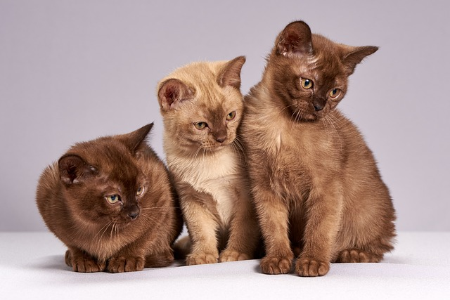
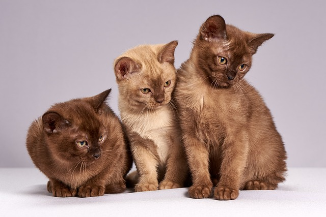

E xistem aproximadamente 70 espécies de gatos conhecidas. As maiores diferenças são o comprimento da cauda e o aspecto geral, visto que variam menos do que as raças de cães. As raças menores variam de 2 a 3 kg e as maiores de 7 a 9 kg. Até hoje, as tentativas de criar raças muito pequenas ou muito grandes fracassaram. O corpo do gato doméstico é bastante flexível, seu esqueleto está formado por 230 ossos (o esqueleto humano, embora muito maior, tem apenas 206 ossos), sua pélvis e ombros estão ligados à coluna vertebral com muito mais folga do que em outros quadrúpedes. A grande habilidade que o gato possui para pular se deve à desenvolvida musculatura. O rabo o auxilia na estabilidade quando salta ou cai. As garras do gato estão desenvolvidas para capturar e segurar sua presa. As unhas, curvas, retráteis e afiadas, estão inseridas numa espécie de almofada que o gato tem no final dos dedos das patas e são utilizadas para brigar, escalar e caçar. O gato demarca seu território arranhando e deixando seu cheiro nas árvores ou em outros objetos. Os dentes deste animal têm como objetivo a mordedura (geralmente mortal para suas presas), não a mastigação.
 
